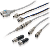

Building Automation
Industrial Automation
Power Automation & Safety


Bangladesh Distributor
Wiring Systems
| Introduction | Features |
| Principles | Classifications |
| Engineering Data |
|
|
|
Troubleshooting |
-
 What Is a Wiring System?
What Is a Wiring System?
-
Classifications
-
Product Lineup and Features
-
What Is a Push-In Plus Terminal Block?
-
Terminal Block Types and Connection Methods
-
Mechanism of Screwless Terminal Blocks
-
Differences between Push-In Terminal Blocks and Push-In Plus Terminal Blocks
-
Products That Support Push-In Plus Terminal Blocks
What Is a Wiring System?
A Wiring System is a device that is used to convert a connection to a connector to connect (wire) a device or circuit.
Converting connections to connectors makes it possible to connect and disconnect devices with just your hands or simple tools.
This document classifies Wiring Systems as follows.
Connector-Terminal Block Conversion Unites
A Connector-Terminal Block Conversion Unit is a terminal block conversion unit with a prewired connector that can be used to wire all the I/O for a programmable controller with a single cable.
Industrial Ethernet Connectors
Industrial Ethernet Connectors support industrial networks based on Ethernet, such as EtherCATR.
Sensor I/O Connectors
Sensor I/O Connectors are used to convert the wiring for a sensor into a connector.
PCB Connectors
PCB Connectors are specialized connectors that are used to connect PCBs to other PCBs or to cables of electronic devices and to connect mounted electronic parts.
Classifications
| Connector-Terminal Block Conversion Unites | ||
| Name | Main application locations | Main types |
| Industrial connectors | Units for PLCs | |
| Units for General-purpose Devices | ||
| Industrial Ethernet Connectors | ||
| Name | Main application locations | Main types |
| Industrial connectors | Cables with Standard RJ45 Connectors | |
| Cables with Rugged RJ45 Connectors | ||
| Cables with Waterproof M12 Connectors | ||
| Sensor I/O Connectors | ||
| Name | Main application locations | Main types |
| Industrial connectors | Waterproof Round Connectors  | |
| Connector Terminal Boxes | ||
| e-CON Connectors | ||
| PCB Connectors | ||
| Name | Main application locations | Main types |
| FPC connectors | FPC/FFC Connectors | |
| Consumer and commercial connectors | MIL Connectors | |
| PCB Terminal Blocks | ||
| HM/ZD Connectors | ||
| Half-pitch Connectors | ||
| DIN Connectors | ||
| I/O Connectors | ||
| Jumper Plugs | ||
| IC Sockets | ||
| Electroformed parts | Battery Connectors | |
| Probe Pin | ||
Product Lineup and Features
Connector-Terminal Block Conversion Unites
A Connector-Terminal Block Conversion Unit is a terminal block conversion unit with a prewired connector that can be used to wire all the I/O for a programmable controller (PLC) with a single cable.
OMRON provides Units for PLCs, which have wiring patterns specialized for PLC connections, and Units for general-purpose devices.
Recently, the use of devices with push-in terminal blocks has been increasing in order to improve work efficiency. In particular, push-in terminal blocks on Connector-Terminal Block Conversion Units that are used to connect to PLCs with their many signals make it possible to reduce space requirements and reduce wiring work.
OMRON’s lineup also includes conventional Units with phillips screws or slotted screws, Units with e-CON specification, and more.
Features of Units with Push-in Terminal Blocks
Structure

With a push-in terminal block, a wire is inserted and the clamp spring presses against the wire to lock it into place.
Three types of wire can be used: 1) wires with ferrules, 2) solid wires, and 3) stranded wires.
Connecting a Wire
If you use a wire with a ferrule, you can wire by inserting the ferrule into the push-in terminal block. Also, there is no need for retightening screws after shipping, so installation can be performed immediately.
Pullout Strength
The pullout strengths of push-in terminal blocks are specified in the JIS C 8201-7-1 or IEC 60947-7-1 standard.
Example: Pullout Strengths for Wires with Ferrules
| Wire thickness (cross-sectional area) | Value in JIS standard |
| AWG20(0.52mm2) | 20N |
| AWG22(0.33mm2) | 15N |
Industrial Ethernet Connectors
Industrial Ethernet Connectors support industrial networks based on EtherCATR and other protocols.
OMRON provides Cables with Standard Connectors, which reduce cable routing space, Cables with Rugged Connectors, which are suitable for wiring outside control panels, and Cables with Waterproof Connectors.
Features of Cables with Standard RJ45 Connectors
Shape of RJ45 Connector
RJ45 Connectors are one form of connector that is used to connect communications cables such as LAN cables.
Minimum Cable Bending Radius: 25 mm
The small cable bending radius makes it possible to reduce cable routing space.
LSZH Cable with Double Shield
Double-shield cables with overall braiding and individual foil shield on each wire pair to reduce EMC interference in industrial environments.
Features of Cables with Rugged RJ45 Connectors
Shape of RJ45 Connector
Tough Latch RJ45 Connectors are suitable for connections outside of the control panels.
PVC Cable with Double Shield
Double-shield cables with overall braiding and individual foil shield on each wire pair to reduce EMC interference in industrial environments.
Assembly Connectors
OMRON’s lineup also includes Assembly Connectors that enable you to easily assemble Ethernet cables onsite without crimping tools or other special tools. For details, refer to the Industrial Connector Catalog (Cat. No. X082).
Features of Cables with Waterproof Connectors (Round, M12)
Resistance to Environments

These connectors are environment resistant (waterproof) and achieve IP67 (IEC standard) compliance with their shield structure.
For information on IP67 (IEC standard), refer to the Degree of Protection.
Smartclick Connectors
With a Smartclick Connector, connection is completed by turning the connector approximately 1/8th of a turn.
(1) Reduced Wiring Work and No Torque Management
Because connection is completed with approximately 1/8th of a turn, installation time is reduced. Also, you can confirm the completion of connection with the visible marks.
(2) No Periodic Retightening
Thanks to the bayonet lock structure, machine vibration does not loosen the connector, eliminating the need for periodic retightening.
(3) Work Procedure Standardization
The distinct clicking sensation when the connector locks prevents insufficient tightening.
(4) Compatible with M12 Screw Connectors
| XS5 Smartclick Plug Connector | M12 plug connector | |
| XS5 Smartclick Socket Connector | Twist-and-click connection | Screw connection |
| M12 socket connector | Screw connection | Screw connection |
Even with existing equipment that uses M12 screw connectors, you can connect any combination of connectors.
* When a Smartclick Connector is connected to a screw connector, the connector is screwed on to make the connection.
Sensor I/O Connectors
Sensor I/O Connectors are used to convert the wiring for a sensor into a connector.
We offer various models to suit different uses.
| Type | Main use | Appearance (typical example) |
| Connectors attached to Cable | Used for sensor and actuator wiring to relay sensor signals or the like. | |
| Connector Assemblies | Used to enable using connectors for sensor cables and relay cables. | |
| Sensor Connector Assemblies | Used to enable connectors to be integrated with the Sensor body. | |
| Panel-mounting Connectors | Used to enable using I/O box connectors mounted to panels. | |
| Y-Joint Connectors | Used to wire two sensors to a single cable. | |
| T-Joint Connectors | Aggregate model: Used to wire two sensors to a single cable. Bifurcated model: Used when branching one sensor signal to two cables. Daisy-chain model: Two-wire sensors with contact output can be connected through a daisy chain to obtain AND output. |  |
| Connector Terminal Boxes | Used to wire multiple sensors to a single cable. | |
| e-CON Connectors | Used when the connected device uses e-CON specifications. |
Features of Pressure-welded Assembly Connectors Clarifies Assembly Completion Position
Assembly is completed with any type of cable simply by pressing the cable all the way in. The tightened position is clear, so you can visually confirm assembly completion.
Wide Range of Cables
Two sizes of bushings (one for large-diameter cables and one for small-diameter cables) are provided to support cable diameters from 3 mm to 8 mm.
In addition to these models, you can select from Connectors with IP67 protection, Smartclick Connectors, and other connectors suited to a variety of applications and environments.
For details, refer to the Industrial Connectors Catalog (Cat. No. X082).
PCB Connectors
PCB Connectors are specialized connectors that are used to connect PCBs to other PCBs or to cables of electronic devices and to connect mounted electronic parts.
What Is a Push-In Plus Terminal Block?
A push-in terminal block allows you to connect wires by just pushing them in. Reducing wiring work when building control panels can greatly reduce production work.
Push-In Plus Terminal Blocks were independently developed by OMRON for easier wire insertion and firmer wire holding ability than standard push-in terminal blocks.
Terminal Block Types and Connection Methods
General terminal block types and how to connect them are shown in the following table.
| Terminal block type | Screw terminal blocks | Screwless terminal blocks | ||
| This type of terminal block is structured to connect and fasten wires or crimp terminals directly or with a washer at the bottom of the heads of the terminal screws. | This type of terminal block is structured to connect with the pressure of the spring directly or with a metal strip when you insert the wire between the conductive fitting and the spring. | |||
| For forked or round terminals | For pin terminals | Clamp type | Push-in type | |
| Securing method | Screws | Springs | ||
| Terminal blocks |  | |||
| Applicable crimp terminals *1 | ||||
| Connection steps | Three-step connection (1) Loosen the screw with the tool. (2) Insert the terminal. (3) Tighten the screw with the tool. | Three-step connection (1) Insert the tool. (2) Insert the ferrule. (3) Remove the tool. | One-step connection *3 (1) Insert the ferrule. | |
| Connection tool | Required | Required | Not required | |
*1. Bare wires (solid or stranded) can also be used.
*2. For details on ferrules, refer to * What is a Ferrule?.
*3. A solid bare wire can be connected in one step, but a stranded bare wire requires three steps.
Mechanism of Screwless Terminal Blocks
This section describes the mechanisms and connection methods for push-in and clamp type terminal blocks.
Push-in Type (Example for XW2R-P)
How to insert wire
Using Wires with Ferrules or Solid Wires
The wire should be pushed into the terminal block till stopping.
The clamp spring opens automatically when the conductor is pushed in.
This applies the necessary force to the conductive fitting and the wire is held securely.
Wiring Completed in One Step
Using Stranded Wires
Wiring Completed in Three Steps
(1) Press the flat-blade screwdriver diagonally into the release hole.
(2) Leave the flat-blade screwdriver pressed into the release hole and insert the wire into the terminal hole.
Insert the wire until the stripped portion is no longer visible to prevent shorting.
(3) Remove the flat-blade screwdriver from the release hole.
After you connect the wires, make sure that they are securely held in the terminal block.
How to release wire (Same for Wires with Ferrules, Solid Wires, or Stranded Wires)
(1) Press the flat-blade screwdriver diagonally into the release hole.
(2) Leave the flat-blade screwdriver pressed into the release hole and pull out the wire.
(3) Remove the flat-blade screwdriver from the release hole.
Clamp Type (Example for PYF[][]S)
Wiring Completed in Three Steps
(1) Insert the screwdriver into the screwdriver insertion hole. (The spring at the back of the wire insertion hole will be open.)
(2) Insert the wire or terminal into the wire insertion hole.
(3) Remove the screwdriver. The spring will hold the wire.
* What is a Ferrule?
Ferrules are a European type of pin terminal to prevent unraveling of stranded wire and to stabilize the quality of electrical connections. They are smaller than standard pin crimp terminals and were designed to reduce the size of terminal blocks.
<Reference Information>
The processing flow for wires with ferrules is as follows:
Note:
1. Attaching the ferrule to the wire requires a crimping tool.
2. For information on recommended ferrules and crimping tools, refer to the datasheet of individual products.
Differences between Push-In Terminal Blocks and Push-In Plus Terminal Blocks
Push-In Plus Terminal Blocks use technology for easier wire insertion with firmer wire holding ability than previous push-in terminal blocks. They help reduce the time and work involved in wiring.
Easy to Insert
OMRON's Push-In Plus terminal blocks are as easy as inserting to an earphone jack. They help reduce the work load and improve wiring quality.
Work with Both Hands
Optimized shape to hold the screwdriver was created by the resin parts and the spring.
Work goes smoothly when connecting stranded wires directly to the terminal because it’s easier to aim at the desired terminal.
Held Firmly in Place
Even though less insertion force is required, the wires are held firmly in place. The advanced mechanism design technology and manufacturing technology produced a spring that ensures better workability and reliability.
* Information for Push-In Plus terminal blocks and Screw terminal blocks is based on OMRON's actual measurement value data for the XW2R.
Products That Support Push-In Plus Terminal Blocks
(As of July 2016)
• Sockets
For Relays (MY and G2R-S)
For Timers (H3Y-[]-B and H3YN-B)
For Liquid Leakage Sensor Amplifiers (K7L-[][]B)
• Slim I/O Relays
• Solid State Relays
• I/O Relay Terminals
• Switch Mode Power Supplies
• DIN Track Terminal Blocks
• Measuring and Monitoring Relays
• Solid-state Timers
• Digital Temperature Controllers
• Power Monitors
• EtherCAT Slave Terminals NX-Series
• Connector-Terminal Block Conversion Units
• Safety Relay Units
Refer to the Panel Assist Web (www.ia.omron.com/solution/panel/) for details.
EtherCAT® is registered trademark and patented technology, licensed by Beckhoff Automation GmbH, Germany.